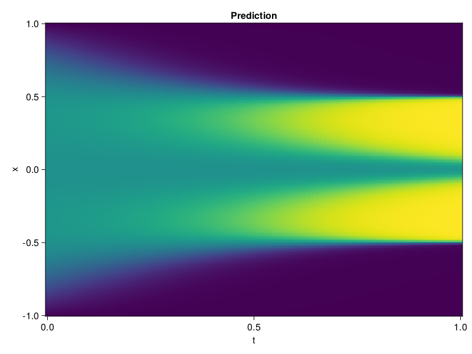

Allen-Cahn Equation with Sequential Training
In this tutorial we are going to solve the Allen-Cahn equation with periodic boundary condition from $t=0$ to $t=1$. The traning process is split into four stages, namely $t\in [0,0.25]$, $t\in [0.0,0.5]$, $t\in [0.0,0.75]$ and $t\in [0.0, 1.0]$.
using ModelingToolkit, IntervalSets
using Sophon
using Optimization, OptimizationOptimJL
@parameters t, x
@variables u(..)
Dₓ = Differential(x)
Dₓ² = Differential(x)^2
Dₜ = Differential(t)
eq = Dₜ(u(x, t)) - 0.0001 * Dₓ²(u(x, t)) + 5 * u(x,t) * (abs2(u(x,t)) - 1.0) ~ 0.0
domain = [x ∈ -1.0..1.0, t ∈ 0.0..0.25]
bcs = [u(x,0) ~ x^2 * cospi(x),
u(-1,t) ~ u(1,t)]
@named allen = PDESystem(eq, bcs, domain, [x, t], [u(x, t)])\[ \begin{align} - 0.0001 \frac{\mathrm{d}^{2}}{\mathrm{d}x^{2}} u\left( x, t \right) + 5 \left( -1.0 + \left|u\left( x, t \right)\right|^{2} \right) u\left( x, t \right) + \frac{\mathrm{d}}{\mathrm{d}t} u\left( x, t \right) =& 0.0 \end{align} \]
Then we define the neural net, the sampler, and the training strategy.
chain = FullyConnected(2, 1, tanh; hidden_dims=16, num_layers=4)
pinn = PINN(chain)
sampler = QuasiRandomSampler(500, (300, 100))
strategy = NonAdaptiveTraining(1, (50, 1))
prob = Sophon.discretize(allen, pinn, sampler, strategy)OptimizationProblem. In-place: true
u0: ComponentVector{Float64}(layer_1 = (weight = [0.16146636009216309 1.4243725538253784; -0.03719544783234596 -1.8756568431854248; … ; -1.8734649419784546 0.30389127135276794; -1.7743029594421387 -1.9806371927261353], bias = [0.0; 0.0; … ; 0.0; 0.0;;]), layer_2 = (weight = [0.07538673281669617 0.5969482064247131 … -0.23152850568294525 0.3049319386482239; 0.004054080694913864 -0.4894498586654663 … 0.41699665784835815 -0.17824722826480865; … ; -0.2923348844051361 -0.10017794370651245 … -0.5887730717658997 0.17731472849845886; 0.40199828147888184 -0.1185302659869194 … -0.3231833577156067 0.04406699538230896], bias = [0.0; 0.0; … ; 0.0; 0.0;;]), layer_3 = (weight = [0.10368744283914566 0.3893359303474426 … 0.42035973072052 -0.2991250455379486; 0.31007105112075806 0.04579279571771622 … -0.12085501849651337 0.48395881056785583; … ; 0.3129328191280365 0.023447904735803604 … -0.2457340955734253 0.015461479313671589; 0.4818982481956482 0.6937408447265625 … 0.41904714703559875 0.6207550168037415], bias = [0.0; 0.0; … ; 0.0; 0.0;;]), layer_4 = (weight = [0.4580780863761902 0.24538730084896088 … -0.21455742418766022 -0.6301031708717346; -0.543283224105835 0.2751210331916809 … -0.049102701246738434 0.6056060791015625; … ; 0.21893206238746643 -0.6675499081611633 … 0.2975147068500519 -0.5064695477485657; 0.015979649499058723 0.10382138937711716 … 0.09185409545898438 0.43905109167099], bias = [0.0; 0.0; … ; 0.0; 0.0;;]), layer_5 = (weight = [-0.12845559418201447 0.49864840507507324 … -0.049714818596839905 0.6473059058189392], bias = [0.0;;]))We solve the equation sequentially in time.
function train(allen, prob, sampler, strategy)
bfgs = BFGS()
res = Optimization.solve(prob, bfgs; maxiters=2000)
for tmax in [0.5, 0.75, 1.0]
allen.domain[2] = t ∈ 0.0..tmax
data = Sophon.sample(allen, sampler)
prob = remake(prob; u0=res.u, p=data)
res = Optimization.solve(prob, bfgs; maxiters=2000)
end
return res
end
res = train(allen, prob, sampler, strategy)u: ComponentVector{Float64}(layer_1 = (weight = [0.2845782835939529 1.2376198511396315; 0.11038399700800422 -1.5705036397625909; … ; -2.4962163490802207 1.132738294021565; -2.353017259348835 -1.376912842577637], bias = [0.16240342271006533; -0.38901793301080184; … ; -0.22571434657469985; 1.405972439871018;;]), layer_2 = (weight = [0.0881831625230502 0.8230227996696543 … 0.10946608363169856 0.21482638312387722; -0.1935580728307521 -0.587454489083581 … 0.1605724650022383 -0.6383648669804389; … ; -0.2672522300287215 -0.3323927333449651 … -1.2569891022843418 1.5126565013085391; -0.032275205889779834 0.10077946893326827 … -0.15487257381800454 0.20592755767821608], bias = [-0.09789054313623416; -0.4707798960298655; … ; -0.9632996736049925; -0.5416719857773683;;]), layer_3 = (weight = [0.04963122690499234 0.39889179540538694 … 0.4317978221330998 -0.32310231653987614; 0.16080526791422772 0.16400116353586355 … 0.40358399920802246 -0.04766443372376407; … ; 0.3210799042548144 0.31536180970058336 … -0.620121737242164 -0.28136766948525765; 0.9106971699458944 0.7007253627366051 … 0.6291730334332242 1.3188210380131302], bias = [0.0156674950425121; -0.15006188760463493; … ; 0.06267153394922913; -0.38129927504749456;;]), layer_4 = (weight = [0.34682247194458604 0.41910167924923525 … -0.5615141790057051 -0.5381179605155163; -0.6470278517819205 0.28682818199488735 … -0.23965073817867738 0.7318184607697859; … ; 0.5177522691912138 -0.5981996468297653 … 0.3525512060646672 -0.10108632054410831; 0.2895661203940185 0.21504280396755054 … 0.4340344504548681 0.823893515918794], bias = [-0.1937532794182963; -0.04488967398374657; … ; 0.15190881339232856; -0.8900491425452418;;]), layer_5 = (weight = [-0.155132398404451 1.1323453453675936 … -0.25206120747168415 0.9437647423579711], bias = [-0.6766040228264928;;]))Let's plot the result.
using CairoMakie
phi = pinn.phi
xs, ts = [infimum(d.domain):0.01:supremum(d.domain) for d in allen.domain]
axis = (xlabel="t", ylabel="x", title="Prediction")
u_pred = [sum(pinn.phi([x, t], res.u)) for x in xs, t in ts]
fig, ax, hm = heatmap(ts, xs, u_pred', axis=axis)